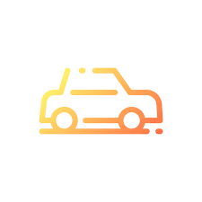

.png)
Бесплатная консультация врача по поводу операционных вмешательств
🚀
Главное - здоровье
Бесплатная консультация врача по поводу операционных вмешательств

Совершенно бесплатно вы сможете получить мнение оперирующего врача экспертного уровня насчет выбранного метода хирургического вмешательства, получить рекомендации по подготовке к операции. Для консультации рекомендуем иметь при себе результаты всех проведенных исследований.
Экстренная хирургическая помощь – это лечение заболеваний оперативным путем, которое не требует отлагательств. В противном случае создается реальная угроза для жизни человека. Экстренная помощь хирурга может потребоваться в следующих случаях: острые боли в животе, которые с течением времени не стихают, а наоборот, нарастают; кровотечения из влагалища или заднего прохода; присутствие крови в моче и острая задержка мочи; травматическое повреждение половых органов; ухудшение общего состояния, которое сопровождается прогрессирующей слабостью, потливостью, падением артериального давления, бледностью кожи и слизистых оболочек.
Большое значение при выборе клиники для проведения оперативного вмешательства имеет личный контакт с врачом. На консультации перед операцией врач уточняет поставленный диагноз, анализирует результаты предоперационного обследования, определяется с методом оперативного вмешательства и анестезии. По желанию пациента, расскажет о ходе предстоящей операции, продолжительности, подготовке и особенностях восстановительного периода. Благодаря такому подходу операция пройдет успешно, а реабилитационный период после вмешательства будет минимальным.
